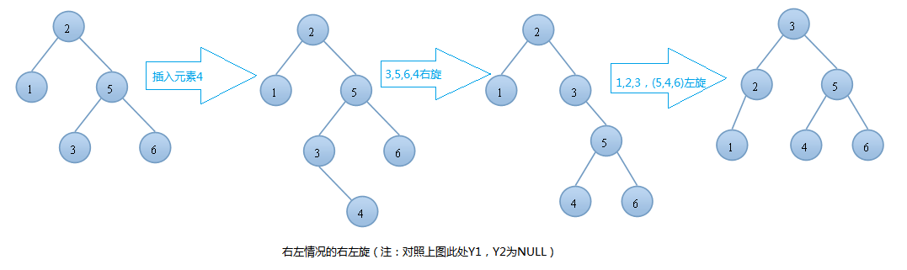

原文连接:https://www.cnblogs.com/linhaostudy/p/11300556.html
AVL树(平衡二叉树)：
AVL树本质上是一颗二叉查找树，但是它又具有以下特点：它是一棵空树或它的左右两个子树的高度差的绝对值不超过1，并且左右两个子树都是一棵平衡二叉树。在AVL树中任何节点的两个子树的高度最大差别为一，所以它也被称为平衡二叉树。下面是平衡二叉树和非平衡二叉树对比的例图：

平衡因子(bf)：结点的左子树的深度减去右子树的深度，那么显然-1<=bf<=1;
AVL树的作用：
我们知道，对于一般的二叉搜索树（Binary Search Tree），其期望高度（即为一棵平衡树时）为log2n，其各操作的时间复杂度（O(log2n)）同时也由此而决定。但是，在某些极端的情况下（如在插入的序列是有序的时），二叉搜索树将退化成近似链或链，此时，其操作的时间复杂度将退化成线性的，即O(n)。我们可以通过随机化建立二叉搜索树来尽量的避免这种情况，但是在进行了多次的操作之后，由于在删除时，我们总是选择将待删除节点的后继代替它本身，这样就会造成总是右边的节点数目减少，以至于树向左偏沉。这同时也会造成树的平衡性受到破坏，提高它的操作的时间复杂度。
例如：我们按顺序将一组数据1,2,3,4,5,6分别插入到一颗空二叉查找树和AVL树中，插入的结果如下图：
由上图可知，同样的结点，由于插入方式不同导致树的高度也有所不同。特别是在带插入结点个数很多且正序的情况下，会导致二叉树的高度是O(N)，而AVL树就不会出现这种情况，树的高度始终是O(lgN).高度越小，对树的一些基本操作的时间复杂度就会越小。这也就是我们引入AVL树的原因
AVL树的基本操作：
AVL树的操作基本和二叉查找树一样，这里我们关注的是两个变化很大的操作：插入和删除！
我们知道，AVL树不仅是一颗二叉查找树，它还有其他的性质。如果我们按照一般的二叉查找树的插入方式可能会破坏AVL树的平衡性。同理，在删除的时候也有可能会破坏树的平衡性，所以我们要做一些特殊的处理，包括：单旋转和双旋转！
AVL树的插入，单旋转的第一种情况---右旋：
由上图可知：在插入之前树是一颗AVL树，而插入之后结点T的左右子树高度差的绝对值不再 < 1,此时AVL树的平衡性被破坏，我们要对其进行旋转。由上图可知我们是在结点T的左结点的左子树上做了插入元素的操作，我们称这种情况为左左情况，我们应该进行右旋转(只需旋转一次，故是单旋转)。具体旋转步骤是：
T向右旋转成为L的右结点，同时，Y放到T的左孩子上。这样即可得到一颗新的AVL树，旋转过程图如下：
左左情况的右旋举例：
AVL树的插入，单旋转的第一种情况---左旋：
由上图可知：在插入之前树是一颗AVL树，而插入之后结点T的左右子树高度差的绝对值不再 < 1,此时AVL树的平衡性被破坏，我们要对其进行旋转。由上图可知我们是在结点T的右结点的右子树上做了插入元素的操作，我们称这种情况为右右情况，我们应该进行左旋转(只需旋转一次，故事单旋转)。具体旋转步骤是：
T向右旋转成为R的左结点，同时，Y放到T的左孩子上。这样即可得到一颗新的AVL树，旋转过程图如下：

右右情况的左旋举例：
以上就是插入操作时的单旋转情况！我们要注意的是：谁是T谁是L，谁是R还有谁是X,Y,Z!T始终是开始不平衡的左右子树的根节点。显然L是T的左结点，R是T的右节点。X、Y、Y是子树当然也可以为NULL.NULL归NULL，但不能破坏插入时我上面所说的左左情况或者右右情况。
AVL树的插入，双旋转的第一种情况---左右(先左后右)旋：
由 上图可知，我们在T结点的左结点的右子树上插入一个元素时，会使得根为T的树的左右子树高度差的绝对值不再 < 1，如果只是进行简单的右旋，得到的树仍然是不平衡的。我们应该按照如下图所示进行二次旋转：

左右情况的左右旋转实例：

AVL树的插入，双旋转的第二种情况---右左(先右后左)旋：
由上图可知，我们在T结点的右结点的左子树上插入一个元素时，会使得根为T的树的左右子树高度差的绝对值不再 < 1，如果只是进行简单的左旋，得到的树仍然是不平衡的。我们应该按照如下图所示进行二次旋转：

右左情况的右左旋转实例：

AVL树的插入代码实现:(仅供参考)
懂了以上单旋转和双旋转的原理之后，那么代码写起来也就比较简单了，以下是我写的代码，如果有错还望大家不吝指正。（参考数据结构与算法分析-Weiss著）
#include <iostream>
#include <stdlib.h>
using namespace std;
#define DataType int
/*
定义AVL树的结构体，链式
*/
typedef struct AvlNode{
DataType data;
AvlNode * m_pLeft;
AvlNode * m_pRight;
int height;
}*AvlTree,*Position,AvlNode;
//求两个数的最大值
int Max(int a,int b)
{
return a>b?a:b;
}
//求树的高度
int Height( AvlTree T)
{
if(NULL == T)
return -1;
else
return T->height;
}
//单旋转右旋
AvlTree singleRotateWithRight(AvlTree T)
{
AvlTree L = T->m_pLeft;
T->m_pLeft = L->m_pRight;
L->m_pRight = T;
T->height = Max( Height(T->m_pLeft),Height(T->m_pRight) ) + 1;
L->height = Max( Height(L->m_pLeft),Height(L->m_pRight) ) + 1;
return L; //此时L成为根节点了（可参考AVL的插入的左左情况的右旋图）
}
//单旋转左旋
AvlTree singleRotateWithLeft(AvlTree T)
{
AvlTree R = T->m_pRight;
T->m_pRight = R->m_pLeft;
R->m_pLeft = T;
T->height = Max( Height(T->m_pLeft),Height(T->m_pRight) ) + 1;
R->height = Max( Height(R->m_pLeft),Height(R->m_pRight) ) + 1;
return R; //此时R成为根节点了（可参考AVL的插入的左左情况的左旋图）
}
//双旋转，先左后右
AvlTree doubleRotateWithLeft(AvlTree T) //先左后右
{
T->m_pLeft = singleRotateWithLeft(T->m_pLeft);
return singleRotateWithRight(T);
}
//双旋转，先右后左
AvlTree doubleRotateWithRight(AvlTree T) //先右后左
{
T->m_pRight = singleRotateWithRight(T->m_pRight);
return singleRotateWithLeft(T);
}
AvlTree AvlTreeInsert(AvlTree T, DataType x)
{
if(T == NULL) //如果树为空
{
T = (AvlNode *)malloc(sizeof(struct AvlNode));
if(T)
{
T->data = x;
T->m_pLeft = NULL;
T->m_pRight = NULL;
T->height = 0;
}
else
{
cout << "空间不够" << endl;
exit(0);
}
}
else if( x < T->data) //如果插入到T结点的左子树上
{
T->m_pLeft = AvlTreeInsert(T->m_pLeft,x); //先插入，后旋转
if(Height(T->m_pLeft) - Height(T->m_pRight) == 2) //只有可能是这个
{
if(x < T->m_pLeft->data) //左左情况，只需要右旋转
{
T = singleRotateWithRight( T );
}
else //左右情况，双旋转,先左
{
T = doubleRotateWithLeft( T );
}
}
}
else if( x > T->data )
{
T->m_pRight = AvlTreeInsert(T->m_pRight,x);
if(Height(T->m_pRight) - Height(T->m_pLeft) == 2)
{
if(x > T->m_pRight->data) //右右情况，进行左旋
{
T = singleRotateWithLeft( T );
}
else //左右情况，双旋转,先右
{
T = doubleRotateWithRight( T );
}
}
}
//如果这个数已经存在，那么不进行插入
T->height = Max(Height(T->m_pLeft),Height(T->m_pRight)) + 1;
return T;
}
//递归实现中序遍历
void inOrderVisitUseRecur(const AvlTree pCurrent)
{
if(pCurrent)
{
inOrderVisitUseRecur(pCurrent->m_pLeft);
cout << pCurrent->data << " ";
if(pCurrent->m_pLeft)
cout << " leftChild: "<<pCurrent->m_pLeft->data;
else
cout << " leftChild: "<<"NULL" ;
if(pCurrent->m_pRight)
cout << " rightChild: "<<pCurrent->m_pRight->data;
else
cout << " rightChild: "<< "NULL";
cout << endl;
inOrderVisitUseRecur(pCurrent->m_pRight);
}
}
int main()
{
AvlTree root = NULL;
root = AvlTreeInsert(root,1);
root = AvlTreeInsert(root,2);
root = AvlTreeInsert(root,3);
root = AvlTreeInsert(root,4);
root = AvlTreeInsert(root,5);
root = AvlTreeInsert(root,6);
root = AvlTreeInsert(root,7);
root = AvlTreeInsert(root,8);
root = AvlTreeInsert(root,9);
root = AvlTreeInsert(root,10);
root = AvlTreeInsert(root,11);
root = AvlTreeInsert(root,12);
root = AvlTreeInsert(root,13);
root = AvlTreeInsert(root,14);
root = AvlTreeInsert(root,15);
inOrderVisitUseRecur(root);
return 0;
}